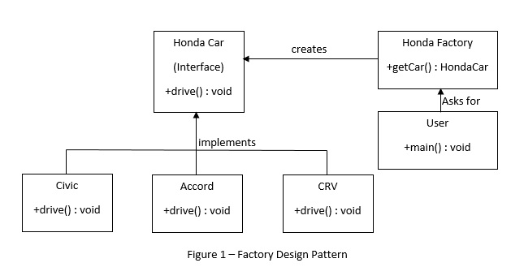

Singleton design pattern is one of the four patterns in the creational design patterns. It is a very simple implementation, and is used when we want to ensure only a single instance of a particular object in the program scope. It is a controversial design pattern in terms of the fact that programmers have differing opinions about the usage of this pattern. It is used in applications such a logging, implementing thread pool, caching, etc.
To implement singleton pattern, a programmer has to adhere to the following guidelines:
a. Make the constructor ‘private’ so that other classes are not able to create a new object externally.
b. The only instance of the class is a private static variable in the same class.
c. Make a global access point for the class variable, as a public static method to return instance of the class. Different methods of initialization help to classify singleton into types like eager initialization, lazy initialization, thread safe singleton, etc.
Eager Initialization:
The class object is initialized when the class is defined. This means that the object is available whenever a client needs it. It also means that the object is available even if a client does not need it. Following is the implementation of eager initialization of Singleton pattern. We can use it if we do not care much about the utilization of resources, but normally such an initialization is avoided.
public class EagerInitializedSingleton {
private static final EagerInitializedSingleton instance = new EagerInitializedSingleton();
private EagerInitializedSingleton(){}
public static EagerInitializedSingleton getInstance(){
return instance;
}
}
Lazy Initialization:
The class object is initialized only when needed by a client. This means that the object is not constructed if a client does not need it. Following is the implementation of eager initialization of Singleton pattern. This type of initialization utilizes less resources than eager initialization.
public class LazyInitializedSingleton {
private static LazyInitializedSingleton instance;
private LazyInitializedSingleton(){}
public static LazyInitializedSingleton getInstance(){
if(instance == null){
instance = new LazyInitializedSingleton();
}
return instance;
}
}
Thread Safe Singleton:
The initialization of the object is a series of several lines of code and hence it is not an atomic operation.
This means that if two or more threads are inside the getInstance() method, there is a possibility of corruption of data, or there may be two or more objects created.
We need to provide thread safe initialization and to do that, we declare the getInstance() method as synchronized.
Following is the thread safe implementation of the Singleton pattern.
public class ThreadSafeSingleton {
private static ThreadSafeSingleton instance;
private ThreadSafeSingleton(){}
public static synchronized ThreadSafeSingleton getInstance(){
if(instance == null){
instance = new ThreadSafeSingleton();
}
return instance;
}
}
Here, the problem is that there is an overhead cost that is associated with the method declared as synchronized.
To avoid this overhead, we use a method called 'double checked locking', wherein the object is created inside an if condition, so as to ensure that only one instance is created.
Following is the thread safe implementation of the Singleton pattern, with 'double checked locking'.
public static ThreadSafeSingleton getInstanceUsingDoubleLocking(){
if(instance == null){
synchronized (ThreadSafeSingleton.class) {
if(instance == null){
instance = new ThreadSafeSingleton();
}
}
}
return instance;
}
Factory Design Pattern is used when we have a super class and several base classes, and we need to instansiate an object of a particular base class depending upon the user input at runtime. The super class can be a simple java class, or an abstract class. It may as well be an interface. The heirarchical structure as described above is more important than the type of class. It is a very widely used design pattern, because the creation logic is hidden from the client and the client only specifies the type of object needed.
Consider for example that we have different types of cars (base classes) and a car factory (super class) of a particular company. We need a way for the user to be able to order the car he needs without worrying about the underlying details about how to create an instance of that car. All the user really cares about is the car and nothing else. For that the user is required to provide the make and the program will handle the rest of the nitty-gritties. See below in Figure 1, the basic structure of Factory Pattern.
The Interface HondaCar looks as following:
public interface HondaCar {
void drive();
}
The Classes of different cars that implement the HondaCar interface:
public class Civic implements HondaCar {
@Override
public void drive() {
System.out.println("Driving the car : Honda Civic...");
}
}
public class Accord implements HondaCar {
@Override
public void drive() {
System.out.println("Driving the car : Honda Accord...");
}
}
public class CRV implements HondaCar {
@Override
public void drive() {
System.out.println("Driving the car : Honda CRV...");
}
}
The Honda Factory class that creates a specific HondaCar based on string input provided:
public class HondaFactory {
public HondaCar getCar(String carType){
if(carType == null){
return null;
}
if(carType.equalsIgnoreCase("CIVIC")){ // to make it case-insensitive
return new Civic();
} else if(carType.equalsIgnoreCase("ACCORD")){
return new Accord();
} else if(carType.equalsIgnoreCase("CRV")){
return new CRV();
}
return null;
}
}
The user now just has to create an instance of HondaFactory and order a car by calling the getCar(String carType) method and pass the type of car as a string:
The HondaFactory class will take care of analyzing which car is ordered and return an instance of that car to the user.
public class User {
public static void main(String[] args) {
HondaFactory hondaFactory = new HondaFactory();
//get an object of Honda Civic car drive it.
HondaCar civic = HondaFactory.getCar("CIVIC");
civic.drive();
//get an object of Honda Accord car drive it.
HondaCar accord = HondaFactory.getCar("Accord"); // notice that it is case-insensitive
accord.drive();
//get an object of Honda CRV car drive it.
HondaCar crv = HondaFactory.getCar("Crv");
crv.drive();
}
}
In the Factory Design Pattern, we have seen that the Factory class is responsible to select between different specific classes and create and return objects, based on the user input (in our case, the user input is in the form of a string. It may as well be an integer, boolean, etc). The factory class uses if-else statements, or switch-case statements in order create the object of the appropriate class and return it.
The Abstract Factory Design Pattern is like a wrapper around the Factory Pattern, wherein the AbstractFactory class creates factories based on user requirements and those factories further process the request based on the Factory Pattern. The AbstractFactory can be referred to as a super factory or a factory of factories. The AbstractFactory class will return object of a concrete factory based on the user input. This concrete factoy will further process the input like in Factory Pattern to return the concrete object that the user asks for.
The Interface HondaCar looks as following:
public interface HondaCar {
void drive();
}
The Concrete Classes of different cars that implement the HondaCar interface:
public class Civic implements HondaCar {
@Override
public void drive() {
System.out.println("Driving the car : Honda Civic...");
}
}
public class Accord implements HondaCar {
@Override
public void drive() {
System.out.println("Driving the car : Honda Accord...");
}
}
public class CRV implements HondaCar {
@Override
public void drive() {
System.out.println("Driving the car : Honda CRV...");
}
}
The Interface HyundaiCar looks as following:
public interface HyundaiCar {
void drive();
}
The Concrete Classes of different cars that implement the HyundaiCar interface:
public class Elantra implements HyundaiCar {
@Override
public void drive() {
System.out.println("Driving the car : Hyundai Elantra...");
}
}
public class Sonata implements HyundaiCar {
@Override
public void drive() {
System.out.println("Driving the car : Hyundai Sonata...");
}
}
public class Tucson implements HyundaiCar {
@Override
public void drive() {
System.out.println("Driving the car : Hyundai Tucson...");
}
}
The AbstractFactroy Class looks as following:
public abstract class AbstractFactory {
abstract HondaCar getHondaCar(String hondaCar);
abstract HyundaiCar getHyundaiCar(String hyundaiCar) ;
}
The Concrete Factroies that extend AbstractFactory create concrete objects (cars) based on input. They look as following:
public class HondaFactory extends AbstractFactory {
@Override
public HondaCar getHondaCar(String hondaCar){
if(hondaCar == null){
return null;
}
if(hondaCar.equalsIgnoreCase("CIVIC")){
return new Civic();
}else if(hondaCar.equalsIgnoreCase("Accord")){
return new Accord();
}else if(hondaCar.equalsIgnoreCase("CRv")){
return new CRV();
}
return null;
}
@Override
HyundaiCar getHyundaiCar(String hyundaiCar) {
return null;
}
}
public class HyundaiFactory extends AbstractFactory {
@Override
public HyundaiCar getHyundaiCar(String hyundaiCar){
if(hyundaiCar == null){
return null;
}
if(hyundaiCar.equalsIgnoreCase("Elantra")){
return new Elantra();
}else if(hyundaiCar.equalsIgnoreCase("SONATA")){
return new Sonata();
}else if(hyundaiCar.equalsIgnoreCase("TuCSoN")){
return new Tucson();
}
return null;
}
@Override
HondaCar getHondaCar(String hondaCar) {
return null;
}
}
The FactroyProducer Class that returns objects of specific factories looks as following:
public class FactoryProducer {
public static AbstractFactory getFactory(String choice){
if(choice.equalsIgnoreCase("HONDA")){
return new HondaFactory();
}else if(choice.equalsIgnoreCase("Hyundai")){
return new HyundaiFactory();
}
return null;
}
}
The FactroyProducer Class is used by the user in order to produce specific objects as follows:
public class User {
public static void main(String[] args) {
//get Honda factory
AbstractFactory hondaFactory = FactoryProducer.getFactory("Honda");
//get an object of Honda Civic
HondaCar civic = hondaFactory.getHondCar("Civic");
//Drive method of Honda Civic
civic.drive();
//get an object of Honda Crv
HondaCar crv = hondaFactory.getHondaCar("CRV");
//Drive method of Honda Cvr
crv.drive();
//get an object of Honda Accord
HondaCar accord = hondaFactory.getHondaCar("Accord");
//Drive method of Honda Accord
accord.drive();
//get Hyundai factory
AbstractFactory hyundaiFactory = FactoryProducer.getFactory("HYUNDai");
//get an object of Hyundai Elantra
HyundaiCar elantra = hyundaiFactory.getHyundaiCar("Elantra");
//call drive method of Elentra
elantra.drive();
//get an object of Hyundai Sonata
HyundaiCar sonata = hyundaiFactory.getHyundaiCar("SONATA");
//call drive method of Elentra
sonata.drive();
//get an object of Hyundai Tucson
HyundaiCar tucson = hyundaiFactory.getHyundaiCar("Tucson");
//call drive method of Tucson
tucson.drive();
}
}